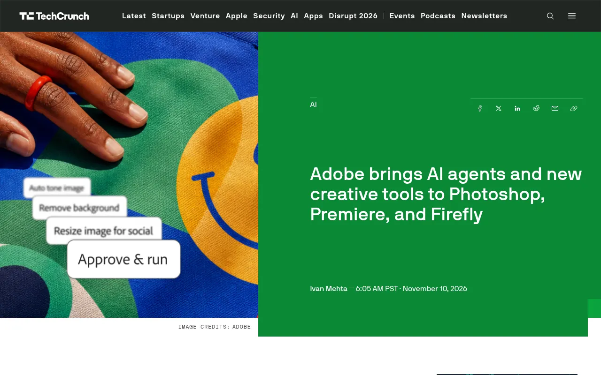
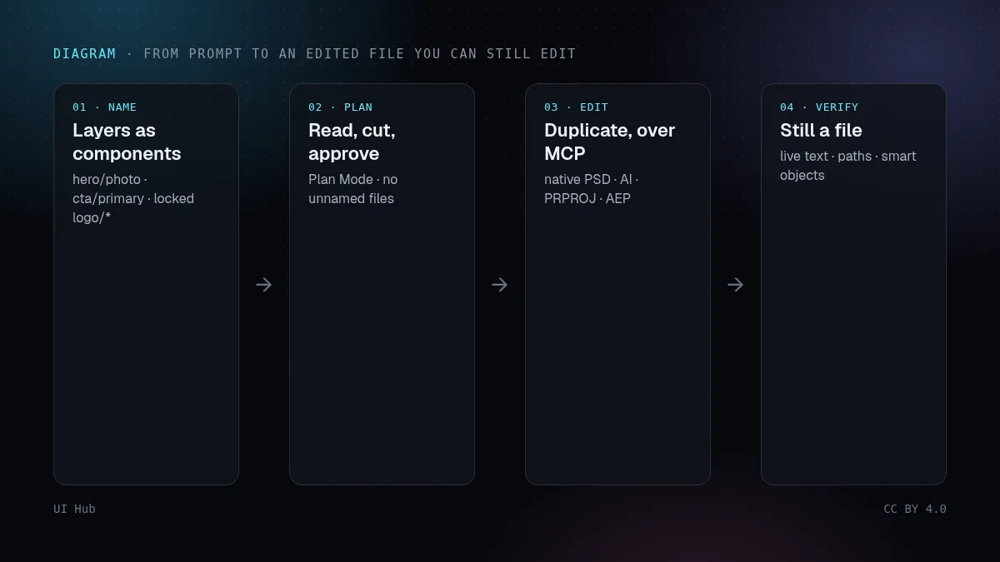
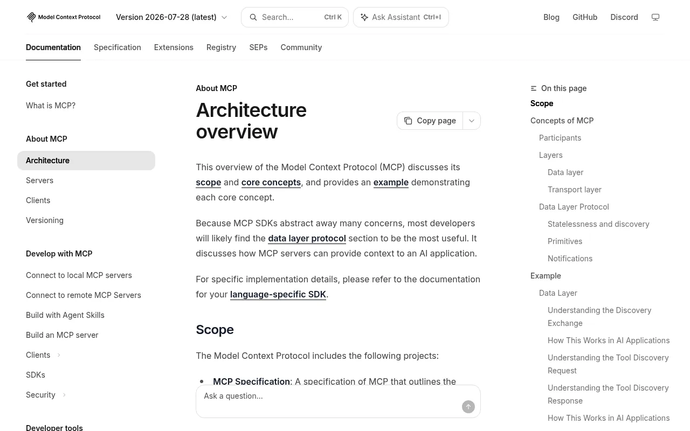

2026 年 11 月 10 日，Adobe 在迈阿密海滩开幕 MAX 大会，发布了一长串智能体功能。大部分是关于 Adobe 自家助手的；对设计师最重要的一条，却是关于别人家的智能体：Adobe 预告了本地 MCP 集成，让外部智能体（比如来自 OpenAI、Google 或 Anthropic 的）直接在你自己电脑上的 Photoshop、Illustrator、Premiere 和 After Effects 项目文件里动手改，改完之后图层、矢量、素材箱和序列依然可编辑。这项功能还没上线，Adobe 说私测要到 2027 年初。但它指明了方向，而要做的准备主要在你的文件上，而不是在工具上。

TechCrunch 2026 年 11 月 10 日关于 Adobe MAX 的报道，配图是 Adobe 提供的智能体快捷操作，最后一步是「Approve & run」按钮 · 截图：TechCrunch（techcrunch.com），2026-11-10 截取，版权归原站所有
这次发布了什么
- 本地 MCP 集成（预览）。MCP 即模型上下文协议，是许多 AI 助手调用外部工具的开放标准。Adobe 的版本在本机针对原生项目文件运行。各方报道口径一致：覆盖 Photoshop、Illustrator、Premiere 和 After Effects，改动保持可编辑，智能体还能串联其他 MCP 工具，比如从 Google Docs 拉简报、把结果发到 Slack。一位 Adobe 副总裁对 TechCrunch 表示，公司还在决定开放哪些能力，会根据大家怎么用再调整。
- Firefly AI 助手（测试版）新增 Plan Mode。智能体执行多步骤任务之前，你可以审阅、修改并批准它的计划。模型选择器让你指定模型或交给自动选择。助手现在还能保存偏好的格式、颜色、品牌规范、角色和产品，并应用到每个项目。
- Firefly Builder（私测）。用自然语言把想法变成可交互、符合品牌的网站、演示或应用原型，不用写代码。TechCrunch 认为这是 Adobe 进入 Figma 的地盘；Creative Bloq 提到 Adobe 声称它不会偏离你的设计系统，并说这正是最该先测试的说法。
- 常驻智能体（预览）。在后台持续处理重复性工作的智能体，比如整理新进素材、检查质量、准备各渠道版本，再交回给你审核。Adobe 说会先进入 Firefly AI 助手，没有给出日期。
- Brand Intelligence 进入编辑器。Adobe 的品牌检查智能体新增 Intelligent Reflow，可把设计自动适配到新尺寸和版式，并将进入 Photoshop、Illustrator 和 InDesign。Firefly 还推出测试版设计画布 Firefly Design，以及可保存、可重复运行工作流的 Firefly Graph。

流程示意：先给目标图层命名，让智能体写出计划并由你批准，再通过本地 MCP 修改原生文件的副本，最后对比图层列表，确认文字、矢量和智能对象仍可编辑 · 示意图：UI Hub 原创，CC BY 4.0
我们的看法：一个命名好的图层，现在就是一个 API
人打开你的文件，还能忍受「图层 47 拷贝 3」。通过 MCP 工作的智能体看不出你的本意，它看到的是名称、分组、画板、色板和文本框。这些整齐，「把每个社媒尺寸里的主图换掉，标题保持不变」就是一条清楚的指令；不整齐，智能体就只能猜。而在原生文件里猜错，比生成一张坏图更难发现，因为它看起来已经完工了。所以第一件事很枯燥：像给代码组件起名那样给图层起名，按功能分组，文字保持为可编辑文字，品牌色放进库里的色板。
第二点是输出约定。「图层保持可编辑」是这次发布里最重要的承诺，也是你每次都该检查的东西。工具一旦把图层拼合、把文字转曲、把矢量栅格化，交给你的就是一张图，而不是一个文件。把「仍可编辑」写进审核项，和「看起来对」并列。
第三是审批。对任何多步骤任务，Plan Mode 都应该是默认设置，这和我们在智能体审批界面一文里主张的模式一样：先读计划，删掉你没要求的步骤，再执行。常驻智能体让风险更高，因为它干活时没人盯着。给它一个审核队列，永远不要给它发布按钮。
最后是 Builder。每个提示生成原型的工具都说自己符合品牌；大多数在第一个不寻常的请求上就跑偏。在信任它或任何竞品之前，用同一组刁钻的小提示跑一遍，数一数有多少东西跑出了你的设计系统：新颜色、新圆角、你没有的组件。
清单：让文件为智能体做好准备
- 像命名组件一样命名图层和画板。「hero/photo」「hero/headline」「cta/primary」，不要「拷贝 3」。按功能分组，而不是按创建时间。
- 品牌规则只放一处。颜色、字体和 Logo 规则做成库里的色板和样式，再加一份简短的书面规范。把它载入助手的偏好设置，而不是每次在提示里重打。
- 锁住不能改的东西。Logo、法律文字和已批准的摄影图放在锁定图层上，并在提示里写明锁定图层禁止改动。
- 打开计划审批。多步骤任务先读计划。凡是碰到你没点名的文件、图层或渠道的步骤，一律驳回。
- 在副本上改，再做对比。外部智能体动手前先复制或存版本，事后对比图层列表：新增、改名、拼合、删除了什么。
- 检查输出是否仍可编辑。可编辑文字、矢量路径、智能对象和调整图层，而不是一张拼合的位图。拼合结果一律算作失败。
- 压力测试「符合品牌」的说法。五条刁钻提示（密集表格、错误状态、很长的德语标题、深色主题、一个新组件），数出所有超出设计系统的东西。
- 给后台智能体一个队列。常驻任务的产出进审核文件夹，每天检查一次，设消费上限，并且能一键关掉。
- 每个连接都要限定范围。智能体能碰哪些应用和文件夹、能串联哪些 MCP 工具，并记录它改了什么。
# 把这段贴给你的设计智能体（任何 MCP 改动之前）
只在我指定的副本文件上工作，绝不动原文件。
执行前先写编号计划，等我批准。
按名称定位图层。不要碰锁定图层，也不要碰
logo/*、legal/*、approved/* 开头的任何图层。
文字保持可编辑，矢量保持路径，智能对象保持完整。
只使用已链接品牌库里的颜色和文字样式。
完成后列出你新增、改名、移动、拼合或删除的每个图层，
以及你没能完成的事项。

模型上下文协议（MCP）架构概览页，说明宿主、客户端和服务器如何把 AI 应用连接到工具 · 截图：Model Context Protocol（modelcontextprotocol.io），2026-11-10 截取，版权归原站所有这周可以做什么
以上没有一项需要等测试版。挑一个真实的活动文件，把命名和分组理干净，把颜色挪进库里，写一页规范。这个文件无论配 Adobe 的助手、Figma 的智能体，还是你明年用的任何 MCP 客户端，都会更好用。如果你已经为产品界面维护了 Token，就让这份规范指向它们，让印刷、社媒和产品共用一个来源。
UI Hub 相关阅读：用 Lint 把智能体约束在设计系统上、让 AI 设计成果可迁移，以及给智能体的设计 Token。